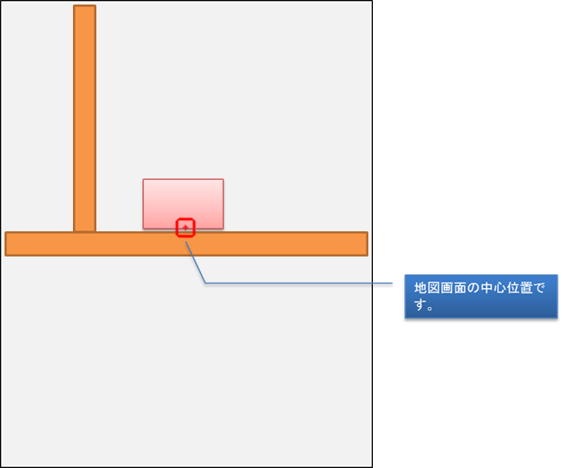

| このサービスは、自分の居場所を地図上で把握し、「今、ここにいるよ。」と伝えるためのWEBアプリです。災害が発生し、避難している全ての方々にお使いいただければと思います。 |
|
皆さん、初めまして。私、仁志と申します。 この度は、このサービスにご訪問いただき、ありがとうございます。 簡単にではございますが、このWEBアプリを作った目的からお話したいと思います。 突然ですが、皆さんにご質問をさせていただきたいと思います。 ①明日、台風が○○○地方に、必ず直撃します。 ②5年後、×××県海域に強い地震が30％の確率で起きる可能性があります。 さて、①・②において皆さんはどちらの話を聞いたら「行動」に移りますか？ おそらく①だと思います。 理由は以下のとおりです。 第一に「明日」という近い将来であるということ。近い将来に起きる事象だとすぐに行動に移りやすいです。 第二に「必ず」という確定した情報であること。100％と言われたら、行動に移さざるを得ません。 ②の場合、「5年後」という先の未来であること、また、「30％」という低い確率であることから「今すぐ」何か行動に移すかと言われれば、ＮＯだと思います。 以上から、次の結論が得られます。 「人は、不確定要素が多い事象は、行動に移しづらい。」 ある災害が起きると、初めて不安になり、避難する等の対策を行う。これが現実だと思います。 とはいうものの、日本は台風・地震・津波・火山噴火・ゲリラ豪雨と災害の多い国です。災害対策を施す必要があります。 そこで、私は、「いざ」という時に役に立つ”強力なツール”が必要だと考えました。 このサービスは、次のような場面に出くわした時に利用していただくWEBアプリです。 ①災害に出くわした時、自分が「今、どこにいるのか」把握したい時。 災害に会った際、安全な場所に避難する必要があります。そんな時、外にいて自分の居場所が分からなくなった場合、ＧＰＳ機能を用いて現在地を把握することができます。 ②仕事や学校等で家族が別々に避難所に集合する時。 ③避難所で家族で待ち合わせしているが、人が多く、どこにいるのか分らなくなった時。 地震等、災害に遭った際、避難所に避難する時があります。その時、避難所は、人で溢れかえり、家族を見つけられないことがあります。 そんな時、このアプリで人に自分の居場所を伝え、待ち合わせをすることができます。 ④遠くの親戚等に安全な場所に避難したことを伝える時。 避難所に避難し、避難生活を送る際、遠くの親戚等が無事かどうか心配されると思います。その際、このアプリで自分は「今、ここに避難している」、無事である旨を知らせることができます。 ⑤災害に遭い、誰かに助けを求める時。 万が一災害に遭ってしまった場合、助けを求める場合に、このアプリで自分の居場所を知らせることができます。 以上、①～⑤のケースを想定し、アプリを構築しました。①～⑤に共通した事柄は一つ。 「今、ここにいるよ。」 これを他者に伝えること、今どこにいるのかが分かり得られる安心感、これを「最大の目的」としています。 多くの方にご利用いただくために、アプリの構造も極力「シンプル」にし、「使い方」や「Ｑ＆Ａ」を設けています。使い方が分からない場合、参照していただければと思います。 最後になりますが、このアプリが多くの皆さんのお役に立てることを心より願っています。 仁志. |
|
地図の画面構成は以下のようになっています。自分が今いる場所を十字キーに合わせてください。 （地図の拡大・縮小やスクロールができます。） メールボタンやLINEボタンで知人にURLを送信することができます。  |
|
Ｑ．このサービスはどんなものなのですか？ |
© 仁志